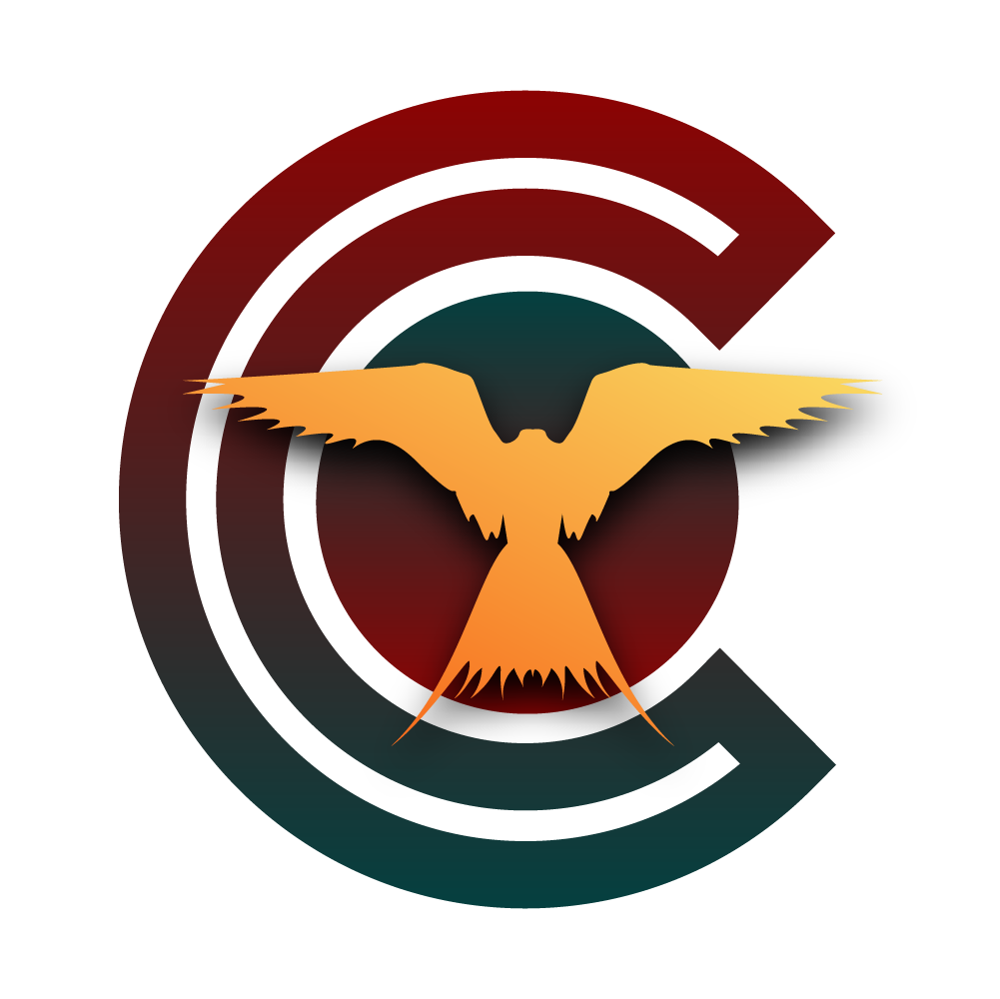

Tutee Connect · Boarding passStudent class
PassengerYou
FromMAAChennai
ToKULKuala Lumpur
Gate01
Seat14A
NowCHECK-IN
Checkpoint01 / 07TC 2027 · MAA–KUL

Tutee ConnectSection conceptsDestinations · Option 1 · Window seat
Destinations · Option 3 · Expanding panels
02 · Where you could live
Hover to look closer. Open a region to see its campuses, then step through the others without leaving the view.
Student Pass · Option 1 · Your file, page by page
05 · The Student Pass, step by step
Malaysia runs no credibility interview, so the decisive work is on paper. Here is your file, page by page, the way your counsellor builds it.
Student Pass · Option 3 · Boarding gate
05 · The Student Pass, step by step
Seven checkpoints between your first question and your first job offer. Pick one and the flight moves on.
Universities · Option 1 · Glass skyline
04 · Top 12 in Malaysia · QS 2027
Each tower is a university. Height is the number of accredited programmes; the closer to the centre, the higher the QS rank. Tap a tower.
Universities · Option 2 · Floating crests
04 · Top 12 in Malaysia · QS 2027
Universities · Option 3 · Leaderboard with a 3D card
04 · Top 12 in Malaysia · QS 2027
Pick a university to put it in the spotlight. Move over the card to tilt it; flip it for the details.